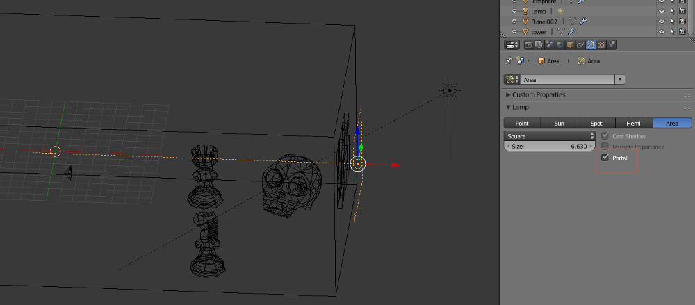
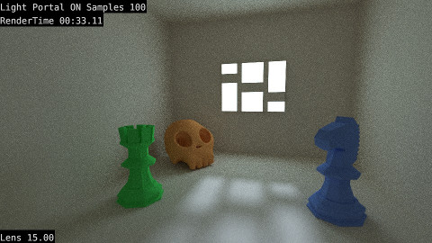
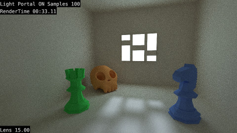
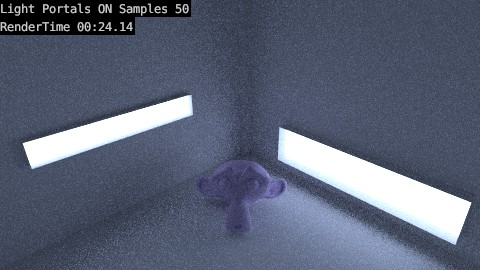

Light Portal
- Versão
- >= 2.75
- Renderizador
- Cycles
Introdução
Portals são objetos colocados dentro de cenas interiores para ajudar o motor de renderização a encontrar a origem da luz. A sua função é indicar a localização de aberturas (i.e. janelas ou portas abertas) por onde entra luz permitindo poupar no esforço do renderizador. Por outras palavras, permite renderizar mais rápido!
No Cycles, os Light Portals só funcionam com a luz do "enviroment", não funcionam com as luzes tipo Sun, Spot, etc.
Exercício
Os Light Portals são muito fáceis de utilizar. Basta adicionar uma luz do tipo Area, ativar a opção Portal e colocar a mesma no local da abertura.
Pode utilizar mais do que um Portal. Pode utilizar várias luzes mas o Portal só vai utilizar a iluminação do tipo "enviroment".
A cena abaixo é um paralelepípedo com uma janela e vários objetos. A câmara está dentro do paralelepípedo, existe uma luz do tipo Sun do lado de fora e apontada à janela. É utilizada a luz do World e AO.
O Light Portal está colocado fora do paralelepípedo e cobre a área da janela. Permite identificar a janela como fonte de luz para a cena.
Se utilizar um Light Portal, a renderização demora mais tempo (compare a 1ª com a 3ª imagens). Contudo, precisa de menos samples para renderizar a cena (compare a 1ª com a 2ª imagem).
 

No exemplo abaixo, só é utilizada a luz do World. Não é utilizado AO nem qualquer outra fonte de luz.
